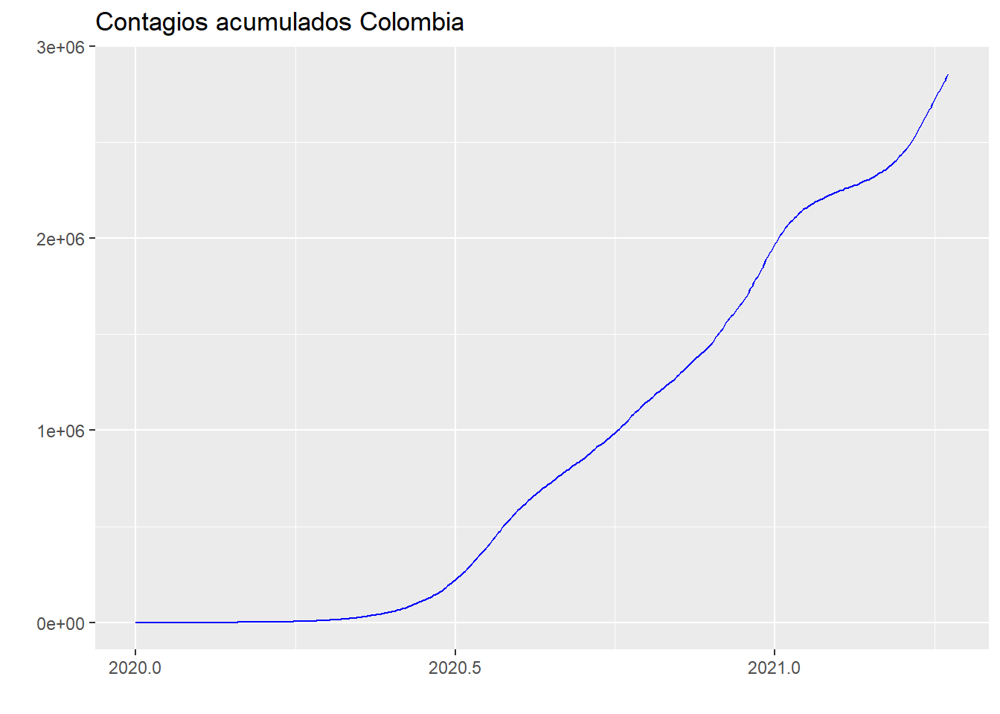
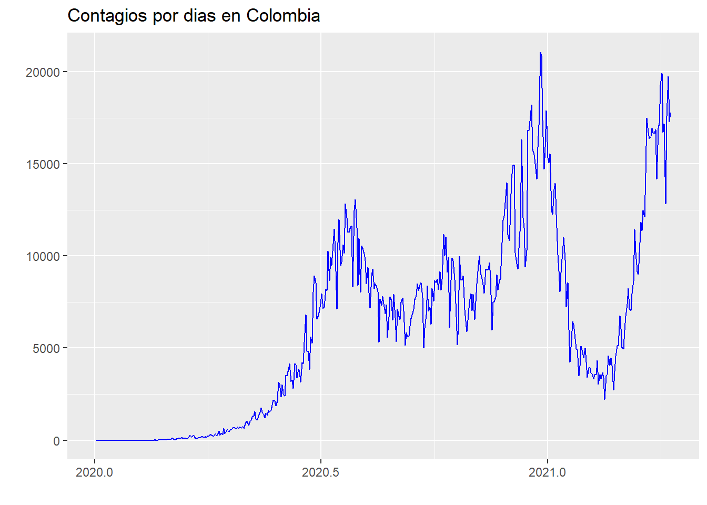

Importación de datos en tiempo real del Covid a nivel Mundial en el lenguaje R
Henry Sebastian Rangel Quiñonez
1/5/2021
Datos del Covid
Los datos del covid son administrados por la universidad Johns Hopkins https://www.arcgis.com/apps/opsdashboard/index.html#/bda7594740fd4029 la cual se encarga de hacer seguimiento y actualización de los reportes diarios de las paises reportantes. El principal medio de consulta de datos es un dashboard que prociona una lectura de las series de muertes, total de contagios y recuperados por país. Aún así, en ocasiones es importante trabajar los datos directamente por lo investigadores. Así que, comparto un corto instructivo para descargar los datos a R en tiempo real, sacando el mayor provecho de una base que es alimentada diariamente, además comento algunas posibles aplicaciones a estos datos.
Descarga de datos desde Github
Los datos que alimentan el dashboard de Jonh Hopkins son almacenados en la cuenta oficial de la universidad en la plataforma Github en el usuario CSSEGISandData, allí se pueden encontrar datos de corte transversal diarios de paises, regiones y/o departamentos, así como los datos de series de tiempo a nivel pais desde el 22 de enero del 2020. En el caso de Estados Unidos se puede encontrar información más detallada como el número de vacunados, entre otras variables.
Para este caso, para este ejemplo importaré los datos de series de tiempo a nivel mundial de casos confirmados, muertes y recuperados. Para importar los datos se debe tomar la URL de los datos en crudo “raw data” tal como es mostrado a continuación:
urlfile.death<-'https://raw.githubusercontent.com/CSSEGISandData/COVID-19/master/csse_covid_19_data/csse_covid_19_time_series/time_series_covid19_deaths_global.csv'
muertes.total<-read.csv(urlfile.death)
urlfile.confir<-'https://raw.githubusercontent.com/CSSEGISandData/COVID-19/master/csse_covid_19_data/csse_covid_19_time_series/time_series_covid19_confirmed_global.csv'
confirmados.total<-read.csv(urlfile.confir)
urlfile.recove<-'https://raw.githubusercontent.com/CSSEGISandData/COVID-19/master/csse_covid_19_data/csse_covid_19_time_series/time_series_covid19_deaths_global.csv'
recuperados.total<-read.csv(urlfile.recove)Lo anterior crea tres data.frames “recuperados.total”, “confirmados.total” y “muertes.total”, de forma similar se pueden decargar otros archivos, basta con conocer el nombre de la tabla de datos.
Preprocesamiento de datos
Puede ser de interés del investigador filtrar un solo país para analizar los datos, por lo que deberán aplicar las siguientes líneas
confirmados.col=confirmados.total[Country.Region=="Colombia",]La columna Country.Region contiene los nombres de los paises, para este caso se hace el filtro para Colombia, pero podrá ser modificado por cualquier otro país de la base de datos. Ahora, debemos modificar la base de datos de horizontal a vertical y eliminar las filas que corresponden a caracteres así como, eliminar los valores correspondientes a longitud y latitud.
confi.col=data.frame(t(confirmados.col)[-c(1:4)])
colnames(confi.col)=c("Col.confirmados")
attach(confi.col)
confi.col.ts=ts(as.numeric(Col.confirmados),start=c(2020,1,22) , freq=365 )Ahora tenemos nuestra serie de tiempo del acumulado de contagiados diarios que podría ser graficado de la siguiente forma.
## Loading required package: ggplot2
De esta información podemos construir los contagios por día con el operador diferencia \(\Delta covid= covid_t-covid_{t-1}\), para lo cual se usa la función Diff.

La gráfica anterior puede ser sujeta a estudios de los modelo clásicos de series temporales univariadas.
Distribución espacial de los datos
Esta base de datos provee información de latitud y longitud, lo que permite hacer georeferenciación de las variables. Para ello es necesario hacer un ordenamiento de los datos para facilitar el análisis del número de casos confirmados acumulado del día que es decargada la base, para este caso
"2021-05-01"mundi=confirmados.total[c(2,3,4,ncol(confirmados.total))]
mundi$X4.29.21=as.numeric(mundi[,4])Una vez configurada la nueva base procedemos a instalar los paquetes correspondientes y a importar una malla geopolitica mundial. En el siguiente link se puede profundizar un poco sobre ello https://rpubs.com/rubenfbc/mapa_coordenadas
Para final, podemos ubicar en un mapa mundo puntos según el total de contagiados acumulados a la fecha de corte que el código es ejecutado.
library(dplyr )##
## Attaching package: 'dplyr'## The following objects are masked from 'package:stats':
##
## filter, lag## The following objects are masked from 'package:base':
##
## intersect, setdiff, setequal, unionlibrary(mapdata)## Loading required package: mapslibrary(ggplot2)
library(maps)
library(ggrepel)
library(ggthemes)
library(ggthemes)
mapa_mundo <- map_data("world")
mapa_mundo %>%
ggplot() +
geom_polygon(aes( x= long, y = lat, group = group),
fill = "grey80",
color = "white") +
geom_point(data= mundi,
aes(x=Long, y = Lat, size = X4.29.21),
stroke = F) +
scale_size_continuous(name = "Contagios Acumulados") +
ggtitle( "Contagios acumulados") +
theme_map()## Warning: Removed 2 rows containing missing values (geom_point).
Este mapa va a variar si el código es ejecutado en distintos perios de tiempo y puede servir de insumo importante. El mismo ejercicio se puede hacer a nivel país por región. Les comparto este mismo documento en formato html para facilitar la lectura de los código. <https://sebasrangel29.github.io/sebasrangel29.github.oi/covid2.html>